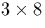

Le dispositif d'insertion de synchronisation, ds lors, devient ncessaire, puisque l'on ne sait pas reconnatre, a priori, le dbut de chacun des mots 8 bits transmis. Une solution consisterait ajouter, entre chacun des mots utiles, des sparateurs de composition connue. Le problme serait videmment l'augmentation du nombre de bits transmis, pour un mme nombre de bits utiles (provenant de la quantification du signal analogique initial), et donc l'augmentation dans le mme rapport du dbit de transmission de ces bits (tous les 1/10000 de seconde, il ne faut plus transmettre 8 bits, mais 8 bits plus le nombre de bits ncessaires la constitution du sparateur). La solution retenue est bien d'insrer des mots de reconnaissance, non pas entre tous les mots utiles, mais seulement priodiquement (ici, tous les 10000 mots de 8 bits ou, ventuellement, tous les 100 mots, ce qui donne des frquences d'mission de ces mots de reconnaissance, respectivement de 1Hz et de 100Hz). Afin d'viter d'ventuelles concidences, les mots de synchronisation ont une longueur de 24 (

) bits, ce qui diminue notoirement la probabilit de fausse reconnaissance. Lorsqu'effectu la frquence de 1Hz, l'ajout du mot de reconnaissance est audible mais tout fait tolrable; par contre, 100Hz, l'on a impression de ne plus recevoir que les tops de synchronisation!